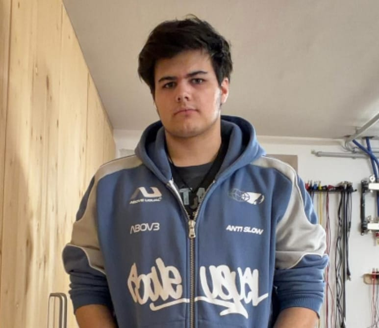
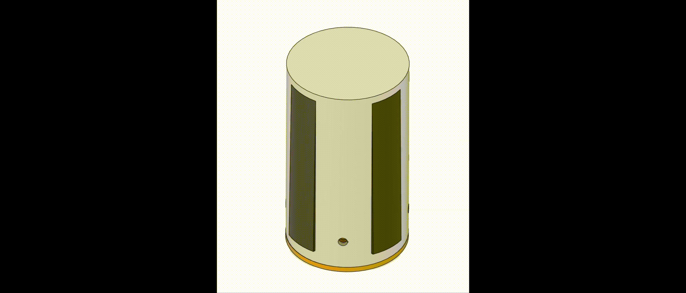

Team

Lukas Haller
Embedded Systems, Sensorik

Daniel Winkler
Hardware, Drohnenbau
Liam Sonnleitner
Software, Bildverarbeitung
CanSat Wettbewerb 2025/26 – Österreich
Tage
Stunden
Minuten
Sekunden
Chimera_II ist unser Beitrag zum österreichischen CanSat Wettbewerb 2025/26. Ziel ist es, Raumfahrttechnologie in einem kompakten Satelliten zu vereinen.
Embedded Systems, Sensorik

Hardware, Drohnenbau
Software, Bildverarbeitung
Messung von Temperatur, Luftdruck und Höhe sowie stabile Funkverbindung über 1km.
Ausfahrbares Flugsystem mit Bildanalyse und Echtzeit-Datenübertragung.

Animation der Transformation